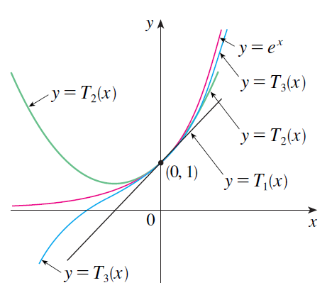
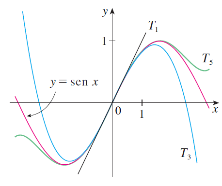

PARTE 4 · AULAS 74–76
Séries de Taylor e Maclaurin
Coeficientes determinados pelas derivadas, séries e polinômios de Taylor, aproximações e controle do erro.
1. Coeficientes
\[c_n=\frac{f^{(n)}(a)}{n!}.\]
2. Série de Taylor
\[f(x)=\sum_{n=0}^{\infty}\frac{f^{(n)}(a)}{n!}(x-a)^n.\]
3. Maclaurin
\[f(x)=\sum_{n=0}^{\infty}\frac{f^{(n)}(0)}{n!}x^n.\]
Exemplo resolvido — exponencial.
Como todas as derivadas de \(e^x\) valem \(1\) em \(0\),
\[e^x=1+x+\frac{x^2}{2!}+\frac{x^3}{3!}+\cdots.\]
\[e^x=\sum_{n=0}^{\infty}\frac{x^n}{n!}.\]

4. Polinômio de Taylor
\[T_n(x)=\sum_{k=0}^{n}\frac{f^{(k)}(a)}{k!}(x-a)^k.\]
O polinômio reproduz, no centro, o valor da função e suas derivadas até a ordem \(n\).

5. Resto
\[R_n(x)=f(x)-T_n(x).\]
Na forma de Lagrange, sob hipóteses adequadas,
\[R_n(x)=\frac{f^{(n+1)}(c)}{(n+1)!}(x-a)^{n+1}.\]
Ponto conceitual. A existência formal da série de Taylor não garante, por si só, que sua soma seja a própria função; é necessário controlar o resto.
Visualização no GeoGebra 3D
Abrir GeoGebra 3D ↗Abra o ambiente 3D para explorar geometricamente os objetos relacionados a este conteúdo.
Material organizado a partir das aulas da GCT054 e da bibliografia indicada no Plano de Ensino, especialmente Stewart (2014), Anton, Bivens e Davis (2014) e Thomas, Weir e Hass (2013).